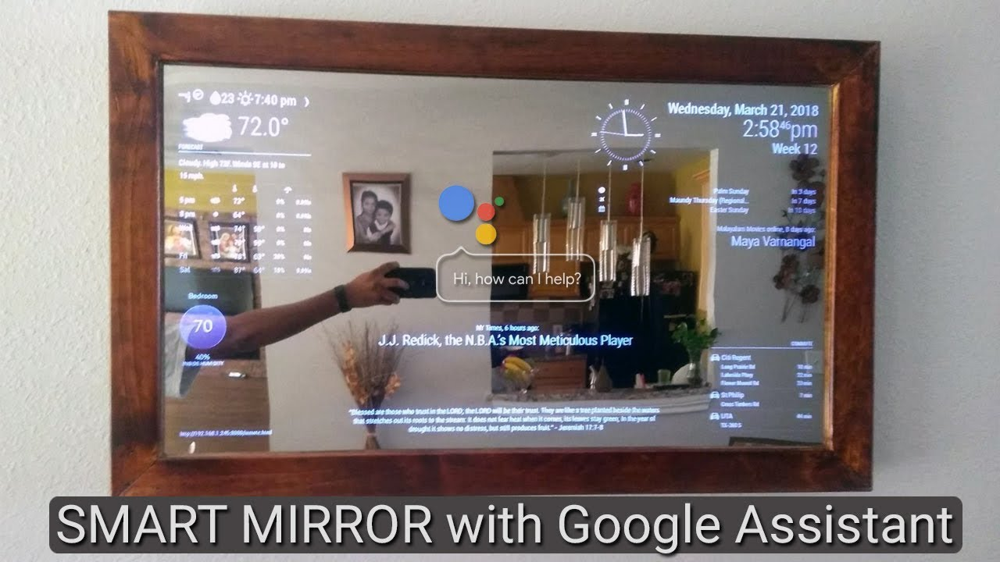

The world around us is constantly changing. With the advancement of science and technology, we are moving towards a more automated way of life. We have smart cities, smartphones, smart cars, and more. This fast way of life requires the development of Home Automation projects. Home Automation systems are mainly created using intelligent IoT devices. And when it comes to home what if our mirror has such capability that can resolve our general daily life problem. So, the question is how smart could a mirror be? These are some of the questions that inspired to select this project, a project which aimed to develop a smart mirror and a small operating system to power it. The device was to go beyond an ordinary mirror, to have a screen inside that you would be able to interact with by using voice commands, hand gestures and smartphones or other devices.
In today’s busy world, everyone whether he’s a businessman, teacher, student, employee needs to communicate the rest world and this device can earn time to utilise one’s time in productive work. Even parents need to keep their eyes over their child while there aren’t home. Smart Mirror can help in all the possible ways.
My intelligent mirror is powered my minicomputer called Raspberry Pi 3. Developing this project has been a great experience. I have learned a diverse range of skills in different fields, such as DIY, IoT, Linux, 3-D printer, electronics, coating over sheet and web development. I used 3-D printer to design the RPI case, web development tools to create a webpage for this entire project. Not sticking to just one field has made this project a really fun one and I would recommend it to anyone who is passionate about creating things.
